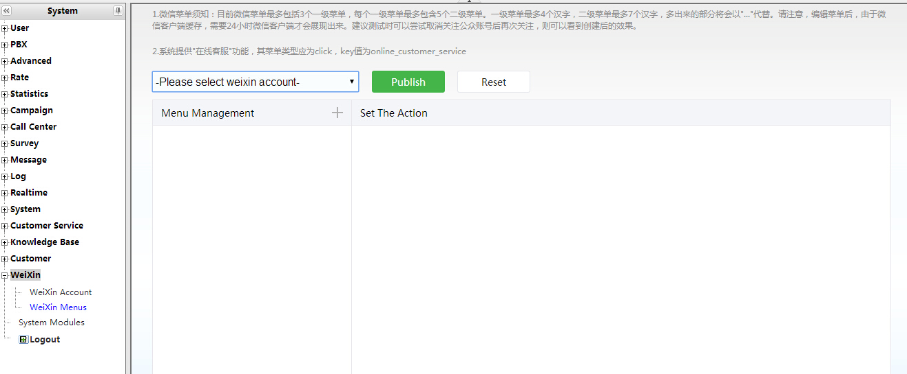
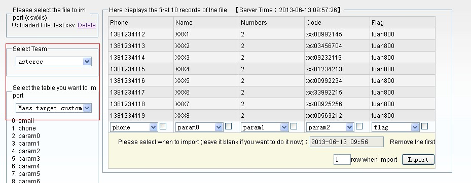
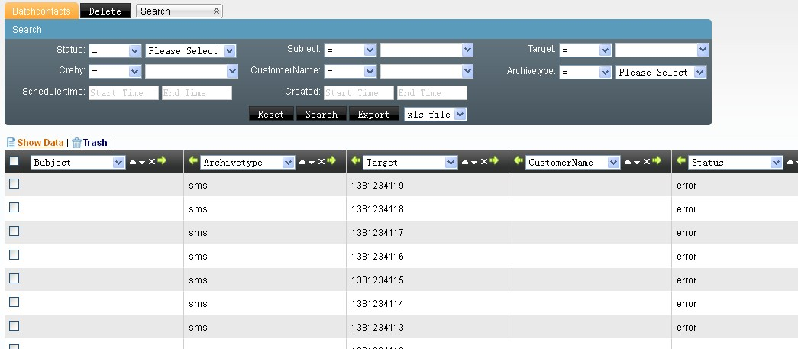
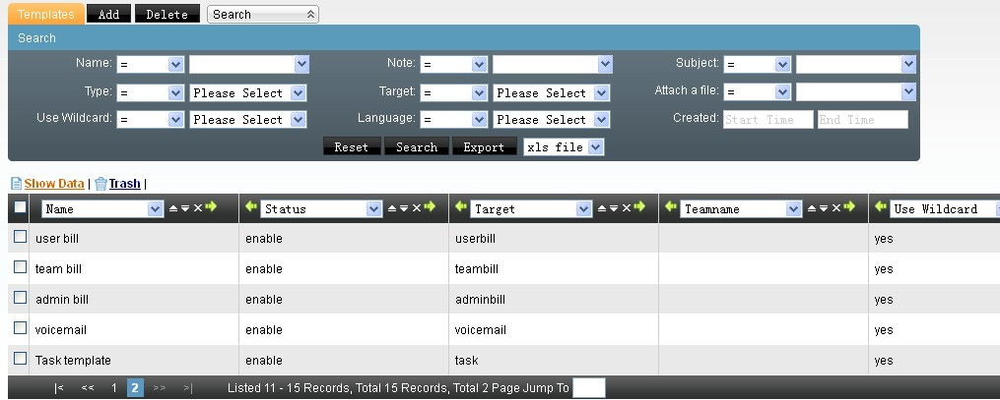
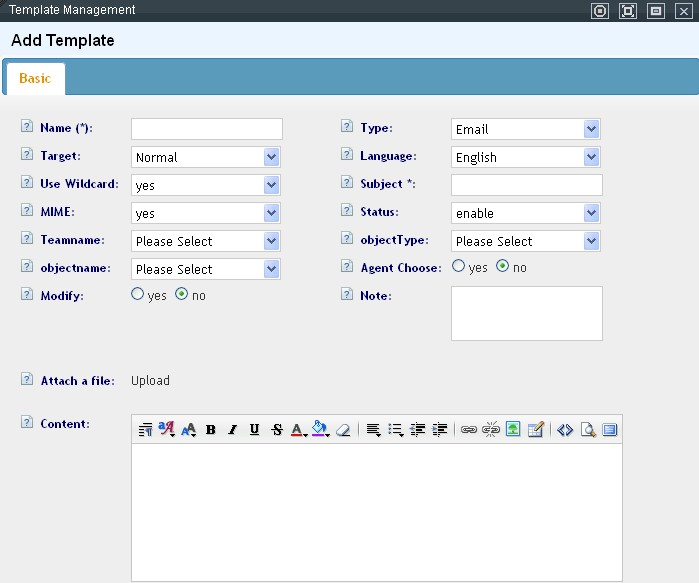
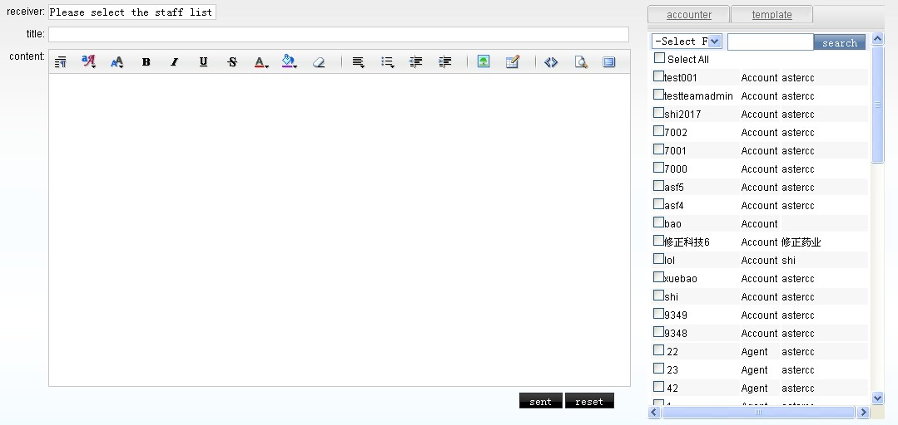
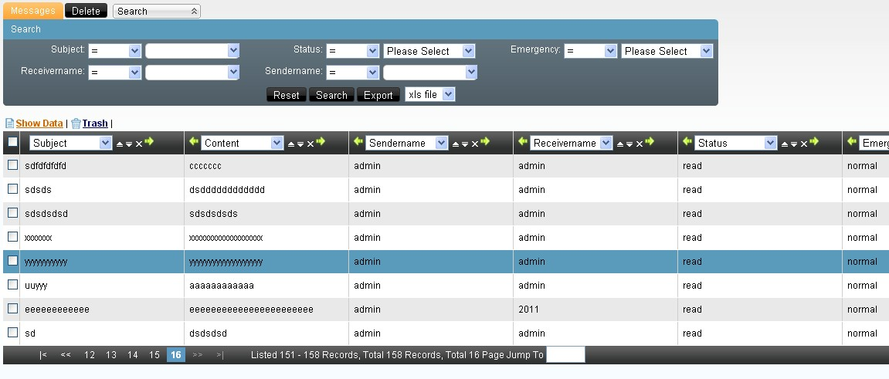
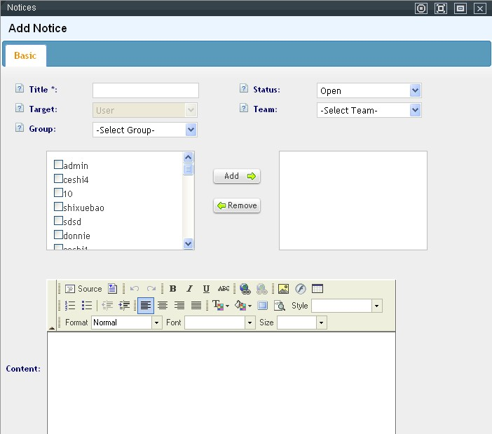
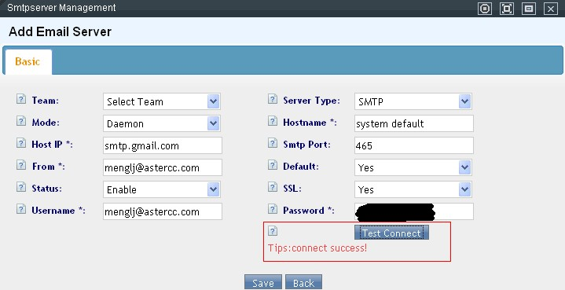

Mensajería — WeChat, Fax y envío masivo¶
Qué es¶
Tres canales de comunicación adicionales al teléfono: WeChat (atención al cliente vía la app china más usada), Fax (todavía vigente en flujos que requieren comprobantes/contratos), y envío masivo de correo/SMS (campañas de comunicación a un segmento de clientes).
Cómo se usa¶
WeChat — conectar una cuenta oficial¶
Requisitos previos: el servidor de AsterCC debe ser accesible por internet en el puerto 80, tener el módulo de WeChat instalado con al menos una licencia de cuenta, y contar con una cuenta de servicio de WeChat verificada (verificación "V", con costo del lado de WeChat).
Pasos de conexión:
- En el servidor, edita
/etc/astercc.confy agrega los parámetros del módulo: wx_token: código de verificación que también se configura del lado de WeChat.wx_log: carpeta donde se registran los mensajes recibidos.- En el centro de desarrolladores de WeChat, activa el modo de desarrollador avanzado y configura:
- URL:
http://<dirección-del-call-center>/wechat - Token: el mismo valor que
wx_token. - En la misma plataforma, habilita los permisos de API necesarios: recibir/responder mensajes de usuario, recibir eventos, menú personalizado, reconocimiento de voz, interfaz de servicio al cliente, ubicación geográfica, información básica del usuario, y subida/descarga de archivos multimedia.
- En AsterCC (Mensajería → WeChat → Cuentas), vincula la cuenta con los datos que da WeChat: ID original, AppId, AppSecret.
| Campo | Qué define |
|---|---|
| ID original / AppId / AppSecret | Credenciales que WeChat asigna a la cuenta oficial |
| Grupo de agentes | Quién atiende las conversaciones de "servicio en línea" que lleguen por este canal |
| Máximo de atenciones simultáneas por agente | Cuántas conversaciones de WeChat puede llevar un agente a la vez |
| Respuesta al seguir la cuenta | Mensaje automático la primera vez que un usuario sigue la cuenta oficial |
| Respuesta al finalizar el servicio | Mensaje de cierre tras terminar una atención |
| Respuesta fuera de servicio | Mensaje automático si el usuario escribe sin haber activado "servicio en línea" |
- En Cuentas y permisos → Grupos de agentes, define el atributo de acceso de medios del grupo asignado: solo agentes libres, o sin restricción (independientemente de si están en pausa o en llamada, mientras no superen su límite de atenciones simultáneas).
- En Mensajería → WeChat → Menú, crea un botón de menú con key =
online_customer_servicepara que el cliente pueda iniciar el chat (ver sección de menú más abajo). - Con un agente del grupo conectado, sigue la cuenta desde un celular y prueba el flujo — el agente ve mensajes de texto, imagen, ubicación, y puede escuchar notas de voz; solo puede responder con texto.
Comportamiento de la conversación: si agente y cliente no interactúan durante 3 minutos, la sesión se cierra automáticamente; al cerrarse, el cliente recibe una encuesta de calificación y debe responderla antes de poder volver a usar el servicio en línea.
WeChat — menú personalizado¶
Reglas de WeChat: máximo 3 menús de primer nivel (4 caracteres cada uno) con hasta 5 submenús cada uno (7 caracteres). Los cambios tardan hasta 24 horas en reflejarse en el cliente de WeChat por caché — para probar más rápido, deja de seguir la cuenta y vuelve a seguirla.
| Tipo de acción del menú | Para qué |
|---|---|
| Key fijo | Dispara una acción del sistema — online_customer_service está reservado para abrir "servicio en línea" |
| Ir a página web | Abre una URL dentro de WeChat |
| Enviar mensaje | Responde automáticamente con un texto fijo (usa un key propio, distinto de online_customer_service) |
Todos los cambios de menú quedan en borrador hasta hacer clic en Publicar — se pueden armar varios cambios (crear, editar, reordenar, eliminar) y publicar todos juntos al final.

Fax — dispositivos y envío¶
Dar de alta un dispositivo de fax (Fax → Gestión de dispositivos):
| Campo | Qué define |
|---|---|
| Nombre del dispositivo | Identificación libre |
| Identificador mostrado | Aparece en el encabezado del fax recibido por el destinatario (From: <id> Num: <número> <fecha> <página>) |
| Número interno | Extensión a la que se marca para recibir por este dispositivo |
| Canales máximos | Cuántos faxes simultáneos soporta el dispositivo |
| Número/nombre que llama (IP) | Visible cuando ambos extremos usan IP para la transmisión |
| Código de país / ciudad, número mostrado | Para formatear el identificador internacional del fax |
| Prefijo de larga distancia | Se antepone al marcar números fuera de la ciudad |
| Timbres antes de recibir | Cuántos tonos esperar antes de iniciar la recepción (se recomienda 2 — muy pronto o muy tarde puede perder datos) |
| Páginas máximas por transmisión | Si el remitente envía más, el excedente se guarda como una transmisión nueva |
| Equipo / cuenta | Dueño del dispositivo |
| Alcance de uso | Quién puede ver los registros y archivos de este dispositivo |
| Locución de salida | Mensaje que escucha el destinatario al recibir un fax saliente |
Tras crear o editar, hay que recargar para que el dispositivo tome los cambios.
Enviar un fax (solo agentes con permiso de la pantalla de envío):
| Modo | Cuándo usarlo |
|---|---|
| Automático | El fax del destinatario recibe sin intervención humana — solo se indica el número, el dispositivo, y se sube el archivo |
| Manual | El fax del destinatario requiere que alguien dé la señal manualmente — el sistema conecta primero una llamada de voz entre el agente y el destinatario para coordinar, y el agente dispara el envío al escuchar el tono de fax |
Solo se aceptan archivos .doc, .docx o .pdf (se convierten automáticamente a PDF); el sistema detecta si un archivo fue renombrado para simular una de estas extensiones y lo rechaza.
Registro de fax: cada transmisión (entrante o saliente) queda con dispositivo usado, números, hora, estado (recibiendo / enviando / éxito / error), motivo de error si aplica, y el archivo generado — descargable si el estado lo permite.
Envío masivo de correo/SMS¶
- Origen de los clientes a contactar:
- La tabla general de clientes individuales, filtrando por etiqueta, o
-
Un archivo importado específicamente para envío masivo (vía Administración avanzada del call center → Importación, tabla "clientes de envío masivo") — el archivo debe incluir el destino (teléfono o correo), los valores para las variables de la plantilla, y una etiqueta que identifique ese lote.

-
Armar el envío (Mensajería → Envío masivo):
- Elige método de envío (SMS o correo) y la tabla origen.
- Elige la etiqueta — el sistema muestra cuántos de esos clientes tienen destino válido (teléfono/correo) frente al total de la etiqueta.
- Si el origen es la tabla general, hay que mapear qué campo de esa tabla llena cada variable de la plantilla, y cuál es el campo
target(destino). - Elige la plantilla, previsualizada con los datos reales del primer cliente.
-
Confirma cantidad estimada de envíos, fecha/hora programada, y —si es correo— el servidor de correo a usar.

-
Tras enviar, el lote queda visible en contactos por lote (
batchcontacts) mientras está pendiente, en proceso, o si falló — funciona como bitácora de trabajo; una vez enviado con éxito, el sistema mueve el registro a contactos por lote enviados (batchcontact sents), y de ahí a archivos (archives), la vista de solo lectura donde queda visible qué servidor de correo se usó, qué plantilla, qué adjunto (si aplica) y el contenido final enviado. Un mensaje fallido puede reintentarse editando su registro en "contactos por lote" y cambiando el estado a "Nuevo".
Plantillas de mensajes¶
Las plantillas (Mensajería → Plantillas) evitan escribir el mismo texto cada vez que se envía un SMS, correo o fax. El sistema trae plantillas predefinidas para las notificaciones automáticas del sistema (tareas, facturas, buzón de voz) — se pueden editar directamente, o crear una nueva y deshabilitar la original para que el sistema use la nueva a partir de ese momento.


| Campo | Qué controla |
|---|---|
| Tipo | SMS, correo, o fax — una plantilla de SMS solo puede usarse para enviar SMS, y así con las demás |
| Uso | Normal (para avisos o publicidad de uso libre) o de aplicación (reservada para las notificaciones automáticas del sistema — tareas, facturas, buzón de voz) |
| Idioma | Permite tener la misma plantilla en varios idiomas (definidos en Sistema → Idioma), para que el agente elija según la preferencia del cliente |
| Usa comodines | Si la plantilla usa variables (##param0##, etc.) que el sistema debe reemplazar automáticamente |
| Asunto / MIME | Solo para plantillas de correo — asunto del mensaje, y si el contenido es HTML |
| Estado | Solo las plantillas habilitadas pueden usarse; para una plantilla de aplicación, solo puede haber una habilitada por idioma y por equipo — si hay más de una, el sistema no sabría cuál usar |
| Equipo | Vacío = disponible para todos los equipos; con equipo = solo ese equipo la usa |
| Tipo y nombre de objeto | Acota la plantilla a un módulo/objeto específico — así, cuando el agente hace clic en "enviar correo/SMS" desde la pantalla de campaña o de atención al cliente, el sistema preselecciona automáticamente la plantilla correcta |
| Selección por el agente | Si el agente puede ver y elegir esta plantilla manualmente |
| Modificable | Si el agente puede editar el contenido antes de enviar, o debe enviarse exactamente como está |
| Adjuntar archivo | Obligatorio para plantillas de fax (solo PDF, DOC o DOCX); en correo es opcional |
| Contenido | Límite de 140 caracteres por SMS (los mensajes más largos se dividen en varios); el correo no tiene límite, pero se recomienda pegar el contenido como texto plano para evitar que símbolos de Word se pierdan en la conversión |
Variables: además de las 10 variables genéricas (##param0##...##param9##) que el remitente asigna manualmente al enviar en lote, existen variables reservadas que el sistema reemplaza automáticamente según el tipo de plantilla de aplicación: variables de tarea (##taskid##, ##title##, ##sender##, ##status##, ##priority##, etc.), de buzón de voz (##teamname##, ##devicename##, ##origdate##, ##callerid##) y de factura (##param_zipcode##, ##param_country##, ##param_address##, ##param_statementstart##, ##param_statementend##, etc. — el logo de la factura se cambia reemplazando el archivo astercc_logo.png en el servidor).
Mensajes internos y avisos del sistema¶
Dos canales de comunicación interna, distintos de los canales orientados al cliente:
- Mensajes internos (Mensajería → Mensajes internos): mensajería punto a punto entre cuentas del sistema — se elige uno o varios destinatarios, se escribe asunto y contenido (con opción de usar una plantilla), y se envía. El destinatario ve un aviso de mensaje nuevo; el mensaje enviado queda visible tanto en Mensajes internos → enviados/recibidos (con estado leído/no leído, que cambia automáticamente al abrir el mensaje) como en Archivos.


- Avisos (Mensajería → Avisos): boletines internos con alcance configurable — sin equipo ni grupo, lo ve toda la organización; con equipo pero sin grupo, lo ve todo el equipo; con equipo y grupo, solo ese grupo; también puede dirigirse a cuentas específicas arrastrándolas de la lista de disponibles a la de seleccionadas. El contenido se escribe con un editor HTML (WYSIWYG). El estado puede ser deshabilitado (nadie lo ve), abierto (aparece en orden cronológico inverso) o fijado (aparece siempre arriba; si hay varios avisos fijados, se ordenan por fecha de publicación entre ellos). Al publicar o fijar un aviso, el sistema notifica a las cuentas con acceso.

Servidor de correo¶
Configura las cuentas de correo salientes usadas por el envío masivo, la plataforma del agente, el envío de facturas, y las notificaciones de work orders.
| Campo | Qué define |
|---|---|
| Equipo | Vacío = servidor a nivel de sistema; con equipo = solo ese equipo lo usa |
| Tipo de servidor | SMTP (requiere usuario/contraseña; el proveedor debe aceptar el envío) o envío local (cualquier remitente, pero muy propenso a ser rechazado como spam si el dominio no coincide con la infraestructura de envío real) |
| Método de envío | PHP (inmediato, bloquea hasta tener resultado — ideal para un solo correo) o por proceso (se encola y un proceso de fondo lo envía cada minuto — ideal para volumen) |
| Host / dominio / puerto | Datos del proveedor SMTP |
| Correo remitente | Dirección que efectivamente envía |
| Por defecto | Solo puede haber un servidor por defecto por equipo (y uno a nivel sistema) — usado automáticamente por procesos internos como facturación o notificación de work orders |
| SSL | Requerido por algunos proveedores (ej. Gmail) |
| Usuario / contraseña | Solo si el tipo es SMTP — el formato de usuario varía por proveedor |
| Botón de prueba | Verifica la conexión antes de guardar en firme |

Servidor de SMS¶
Mensajería → Servidor de SMS no tiene parámetros propios en la interfaz — remite directamente al listado de proveedores de SMS compatibles con AsterCC. La cuenta de envío se da de alta con el proveedor elegido; el sistema se limita a usar esa cuenta para las plantillas de tipo SMS.
Referencia rápida¶
| Tarea | Dónde |
|---|---|
| Conectar una cuenta de WeChat | Mensajería → WeChat → Cuentas |
| Configurar el menú de WeChat | Mensajería → WeChat → Menú |
| Dar de alta un dispositivo de fax | Fax → Gestión de dispositivos |
| Enviar un fax | Fax → Enviar fax |
| Armar un envío masivo | Mensajería → Envío masivo |
| Ver contactos por lote / archivos de mensajes enviados | Mensajería → Contactos por lote / Archivos |
| Configurar servidor de correo | Mensajería → Servidor de correo |
| Crear/editar plantilla de mensaje | Mensajería → Plantillas |
| Enviar mensaje interno | Mensajería → Mensajes internos |
| Publicar un aviso | Mensajería → Avisos |
Fuentes¶
raw/zh/模块使用说明/微信.txtraw/zh/模块使用说明/微信/微信帐号.txtraw/zh/模块使用说明/微信/微信菜单.txtraw/zh/模块使用说明/传真管理.txtraw/zh/模块使用说明/传真管理/传真设备管理.txtraw/zh/模块使用说明/传真管理/发送传真.txtraw/zh/模块使用说明/传真管理/传真记录.txtraw/zh/模块使用说明/群发信息管理.txtraw/zh/模块使用说明/群发信息管理/群发信息.txtraw/zh/模块使用说明/群发信息管理/邮件服务器.txtraw/zh/模块使用说明/群发信息管理/信息存档管理.txtraw/zh/模块使用说明/群发信息管理/信息模版管理.txtraw/zh/模块使用说明/群发信息管理/公告管理.txtraw/zh/模块使用说明/群发信息管理/内部信息管理.txtraw/zh/模块使用说明/群发信息管理/发送内部信息.txtraw/zh/模块使用说明/群发信息管理/已发信息管理.txtraw/zh/模块使用说明/群发信息管理/待发信息管理.txtraw/zh/模块使用说明/群发信息管理/短信服务器.txtraw/en/module_manual/message/archives.txtraw/en/module_manual/message/batchcontact_sents.txtraw/en/module_manual/message/batchcontacts.txtraw/en/module_manual/message/internal_messages.txtraw/en/module_manual/message/mail_server.txtraw/en/module_manual/message/messages.txtraw/en/module_manual/message/notices.txtraw/en/module_manual/message/send_in_bulk.txtraw/en/module_manual/message/templates.txt